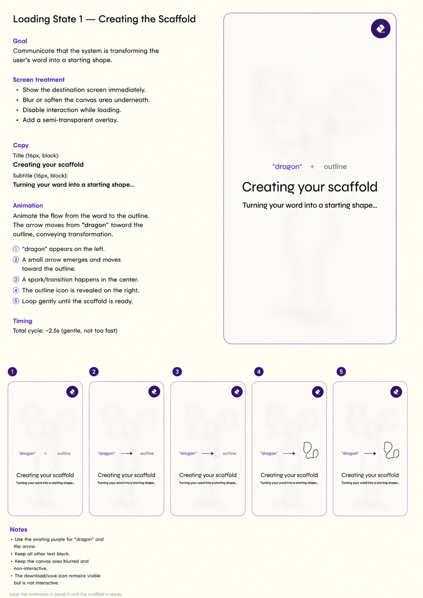
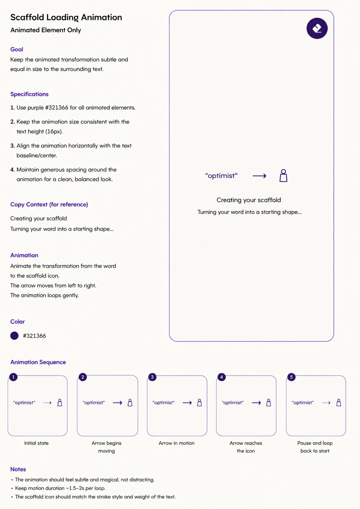
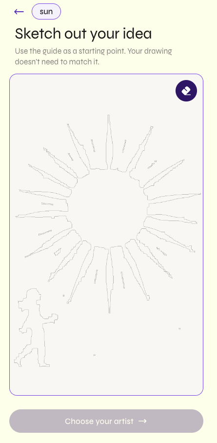
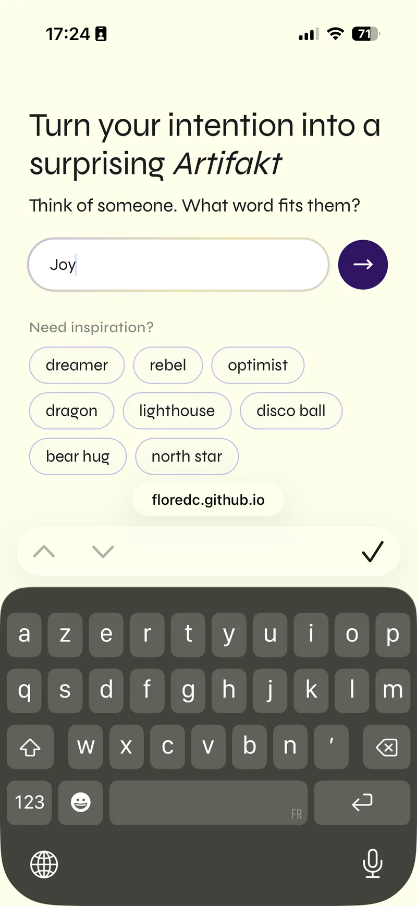
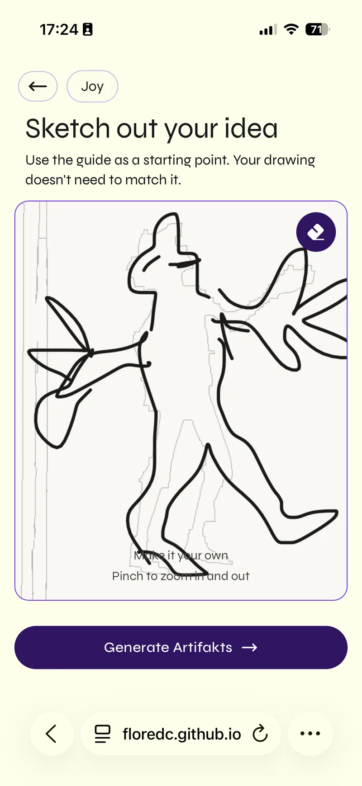
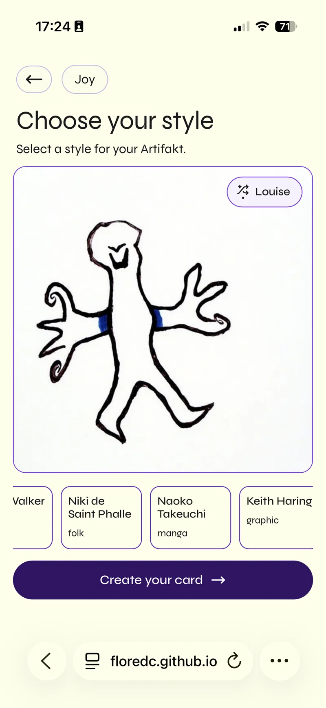
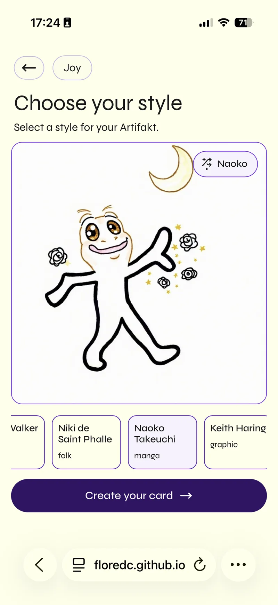
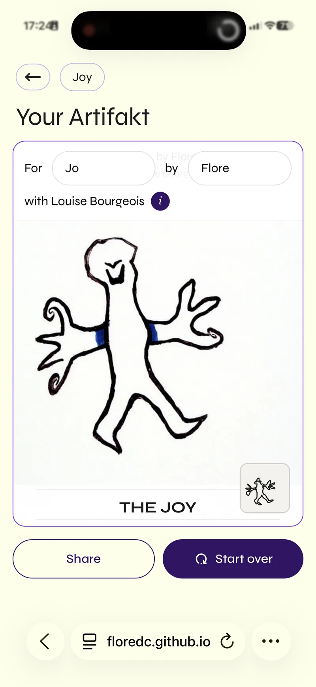

Documents the UX and design decisions made during Session 7. Covers two new loading states and the Screen 3 redesign. Last updated: June 2026.
01What changed this session
Three design areas were addressed: two new loading state screens inserted between existing screens, and a full redesign of Screen 3 (the final card reveal). The flow now has 7 distinct states instead of 5.
Screen 1
Welcome
→
New · LS1
Scaffold loading
→
Screen 2
Sketch
→
New · LS2
Artifakts loading
→
Screen 3
Choose style
→
Screen 4 · Redesigned
Final Artifakt
02Loading State 1 — Scaffold generation
Appears while the scaffold (guide drawing) is being generated from the user's keyword. Sits inside the canvas area — not full-screen — so the user stays spatially oriented.
Decision
Session 7
What
Replaced a spinner with an inline flow animation: keyword → animated arrow → person outline icon
Why
A spinner communicates nothing about what's happening. The animation shows the actual transformation: the user's word becomes a figure. Arrow travels left→right on a 1.8s loop. The person icon is always visible (not animated). All elements are deep purple (#321366). Size matches body text (16px) — subtle, not a hero moment.
Decision
Session 7
What
Overlay is canvas-scoped with frosted glass, not full-screen
Why
The user's sketch already exists under the canvas at this point. Covering only the canvas preserves spatial continuity — they know where their drawing is. The blurred sketch visible beneath reinforces the idea that it's being processed, not replaced. background: rgba(253,251,247,0.92); backdrop-filter: blur(6px).
Decision
Session 7
What
Animation is secondary — the blurred canvas is the emotional anchor
Why
Deliberately not centred or large. It reads as a small process indicator. The ghost of the user's sketch underneath does the emotional heavy lifting. Rule: if the animation feels "designed", it's too much.
Decision
Session 7
What
Copy: "Creating your scaffold" + "Turning your word into a starting shape…"
Why
Two tiers of copy: the first names what's happening (16px Medium), the second explains it in plain language (14px Regular). Anchored below the animation, not competing with it. "Starting shape" makes the scaffold feel preliminary, not final — it sets up the sketch step correctly.
The overlay uses backdrop-filter: blur(6px) rather than an opaque cover. A blurred ghost of the previous state anchors the user spatially and gives the wait a material quality — the sketch is transforming, not disappearing.
Click any slot to load a screenshot from your files.

Design spec — screen treatment & copy

Animation sequence — 5-step loop

The sketch screen visible beneath the overlay
03Loading State 2 — Artifakt generation
Appears while all 4 AI-generated Artifakts are being created in parallel. This is the longest wait in the flow (~10–20s). The overlay is full-screen — not canvas-scoped — because there's no single element to stay oriented around.
Decision
Session 7
What
Sequential build animation: "traced sketch" → → ✦ → → "Artifakt", each element fading in one by one
Why
The animation communicates the narrative arc of the transformation: your sketch becomes something. A 3s loop with staggered CSS animation-delay on each span. The ✦ acts as a moment of magic in the middle. "Traced sketch" and "Artifakt" are literal labels for the before and after — the user can read the transformation as it plays.
Decision
Session 7
What
Moved overlay to full-screen: direct child of #screen2, not inside .s2-canvas-wrap
Why
The first implementation had .pulse-overlay inside the canvas card — it only blurred the artwork area, leaving the nav, title, and artist deck visible and tappable. Moving it to be a direct child of #screen2 with position: absolute; inset: 0 gives full-bleed coverage. The whole screen pauses. Nothing is tappable. The blur (backdrop-filter: blur(8px), background: rgba(255,255,255,0.80)) works because #screen2 has position: relative.
Decision
Session 7
What
Copy: "Creating your Artifakts" + "Your sketch is being interpreted in multiple styles."
Why
Plural — "Artifakts" (not "Artifakt") signals that multiple things are being made at once. The subtitle explains the plurality: "multiple styles". This sets up the reveal on the next screen where four different interpretations appear side by side.
Key structural rule: the overlay must be a child of the element with position: relative that you want it to cover. Placing it inside a child of that element breaks the inset coverage — the overlay will only cover the child, not the full screen.
The final screen was redesigned around a conceptual shift: the card itself is the Artifakt, not just a container for displaying one. The For/By dedication fields moved from the navigation bar into the card, making them part of the object rather than metadata about it.
Before
For/By inputs sit in the nav bar — above the artwork, outside the card. They feel like a form. The card is a frame for the image.
After
For/By inputs are embedded in the card header — inside the card, over the artwork. They feel like an inscription. The card is the gift.
The shift
The user isn't filling out a form that produces an artifact. They're inscribing a card that already is the artifact. Same inputs, different meaning.
Decision
Session 7
What
For/By inputs moved from nav bar into a semi-transparent card header overlay
Why
In the previous design, "For [name]" and "By [name]" sat in the nav area — spatially above and outside the artwork. Moving them into a header layered on top of the card changes the interaction from "filling in metadata" to "inscribing the card". The spatial position makes the meaning. Card header: background: rgba(255,255,255,0.92); border-bottom: 0.5px solid rgba(0,0,0,0.10); padding 12px 14px.
Two rows mirror a physical card inscription: row 1 is the gift (who it's for, who it's from), row 2 is the creative credit. Pill-shaped inputs (height 44px, radius 999px, border 1px #E3E3E3) feel like soft blanks rather than form fields. Placeholder color #6B6B6B → typed color #000 — subtle when empty, present when filled.
Decision
Session 7
What
ⓘ button: 24px filled purple circle (#321366), italic "i", reveals artist bio on tap
Why
The artist attribution deserves context — there's a story behind why this style was chosen. The filled purple circle sits next to the artist name in row 2, small enough to be secondary but always present. It opens a bio/info panel. Font: Georgia italic "i" (Lora Italic in Figma, since Georgia isn't available there).
Decision
Session 7
What
Removed the floating "About the artist" button that was below the card
Why
The ⓘ button embedded in the card header now serves this function — a separate button outside the card was redundant and scattered the screen. Removing it simplifies the layout. All card-related actions (including artist info) live inside the card boundary.
Decision
Session 7
What
Share and Start over: equal width, side by side, outside and below the card
Why
These two actions operate on the completed card, not on its content — keeping them outside reinforces that the card is a finished object. Equal width gives them equal visual weight: neither action is dominant. The user chooses: share this or begin again.
Heuristic for this screen: every element that relates to what's on the card lives inside the card boundary. Every element that operates on the card as a whole lives outside it. The boundary is the design decision.
Click any slot to load a screenshot from your files.
＋Before — nav bar inputs
＋After — blank inputs
＋After — filled in
＋ⓘ artist bio reveal
05Final product
The shipped flow end to end — one keyword, a hand-traced sketch, five artists generated in parallel, and a card that carries its own dedication. Captured 21 June 2026.
Screenshots — shipped flow
FP
One run through, keyword to card
Keyword “Joy” · scaffold traced by hand · Louise Bourgeois selected
Shipped

1 · Keyword — one word for someone

2 · Sketch — tracing over the scaffold

3 · Choose your style — Louise Bourgeois

4 · Choose your style — Naoko Takeuchi

5 · Your Artifakt — For/By inside the card
B
Before the Screen 3 redesign
For/By still in the nav bar · the dedication repeated as a caption inside the card
Superseded
The state these changes replaced — the fields read as a form sitting above the artwork rather than as part of the object.